Geisei, Kochi: things to do, food and stays
Geisei · Kochi
Geisei
Highlighted on the Kochi map.
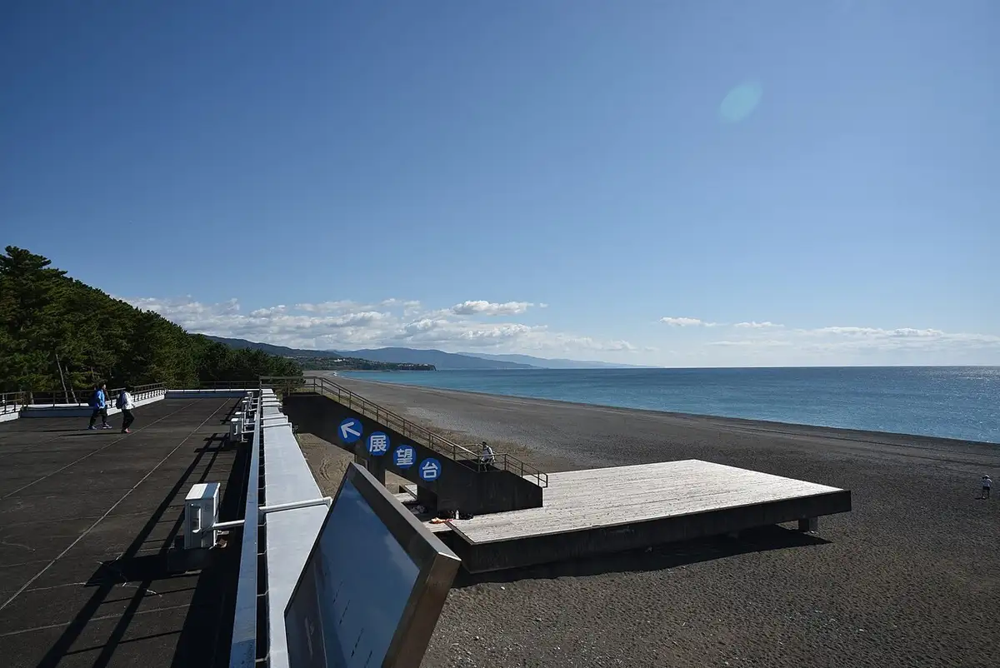
Stay
琴ヶ浜の渚 離れ結
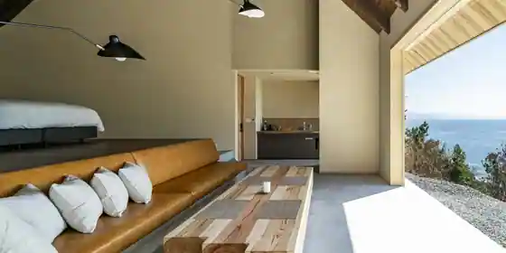
Kon Ke Hama No Nagisa Hanare Ketsu
Inn in Nishibunotsu, Geisei with one group per day.
メルキュール高知土佐リゾート&スパ
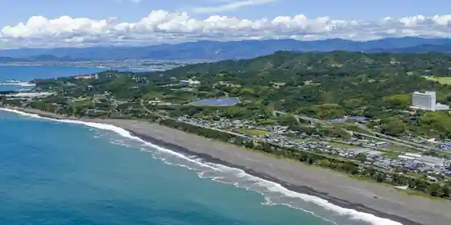
Merukyuru Kochi Tosa Resort & Supa
Resort hotel in Nishibunkabuto, Geisei with scenic views and a quiet countryside setting.
琴ヶ浜の渚
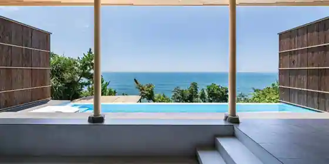
Kon Ke Hama No Nagisa
Inn in Nishibunotsu, Geisei with scenic views.
NAMI TERRACE GEISEI －ナミテラス芸西－
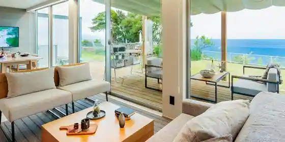
NAMI TERRACE GEISEI - Nami Terrace Geisei
Inn in Nishibunotsu, Geisei with a sauna.
芸西村の家
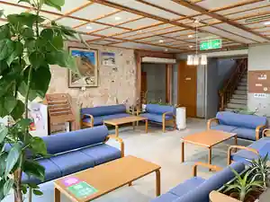
Geisei Mura No Ie
メルキュール高知土佐リゾート＆スパ
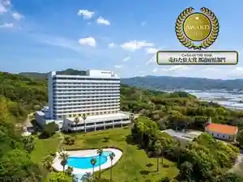
Merukyuru Kochi Tosa Resort & Supa
Resort hotel in Nishibunkabuto, Geisei with buffet meals and parking.
ＯＮＩＷＡ
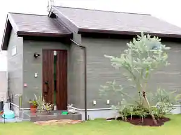
ONIWA
NAMI TERRACE GEISEI ナミテラス芸西
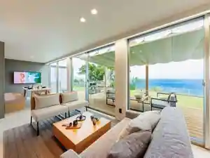
NAMI TERRACE GEISEI Nami Terrace Geisei
Inn in Nishibunotsu, Geisei with a sauna.
Dining
SEA HOUSE
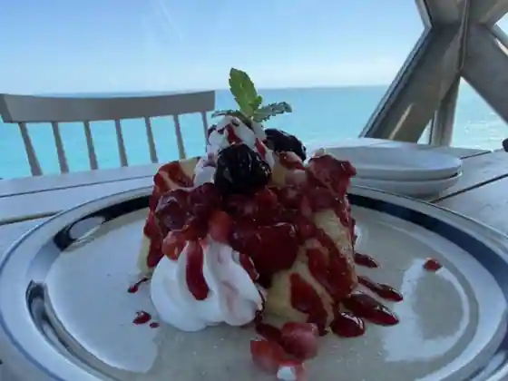
SEA HOUSE
活魚レストラン 藤 芸西店
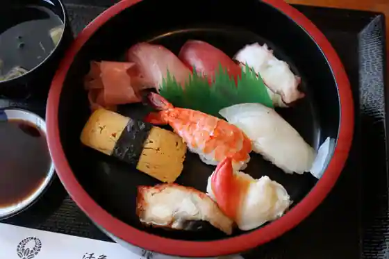
Ikeuo Restaurant Fuji Geisei
喜ら功
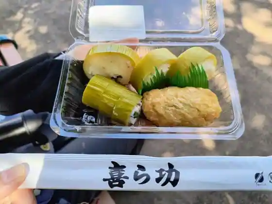
Ki Ra Ko
トレビス
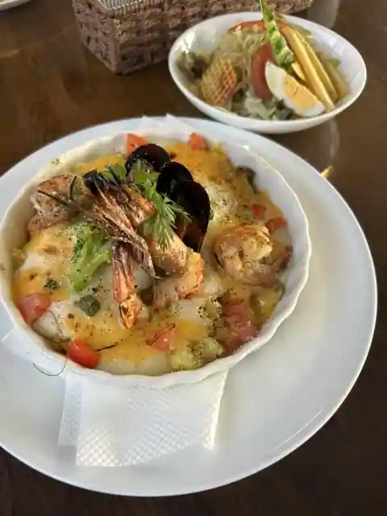
Torebisu
レストラン 四季
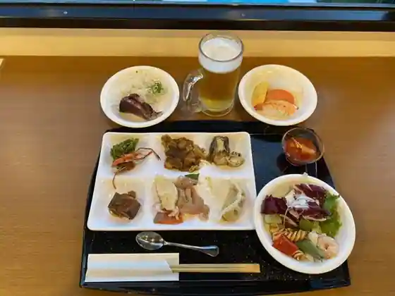
Restaurant Shiki
LOCAVORE
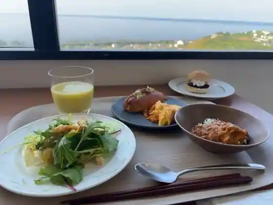
LOCAVORE
レストランサザンクロス
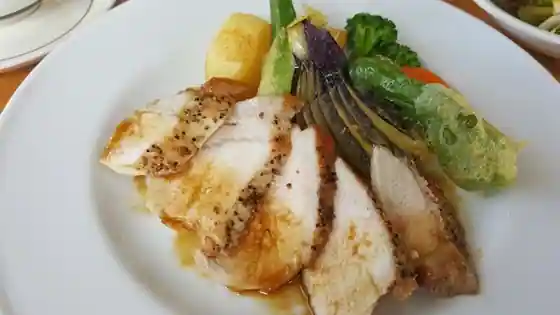
Restaurant Sazankurosu
Sights
Kongahama
Washoku Eki
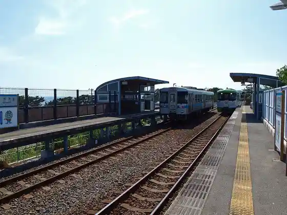
Nishibun Eki
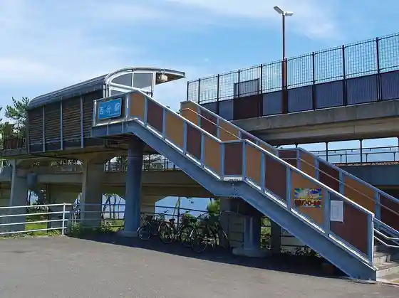
Geisei Town Hall